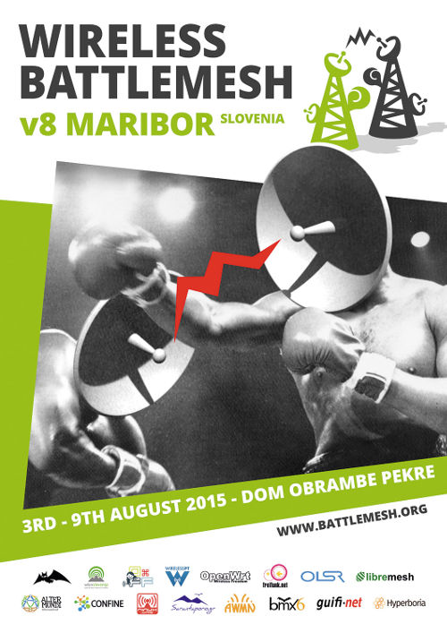

The privacy-friendly network without borders
Documentation
github.com/hyperboria
IRC: EFnet/#cjdns
We're a community of local Wifi initiatives, programmers, and enthusiasts. We run a peer-to-peer IPv6 network with automatic end-to-end encryption, distributed IP address allocation, and DHT-based Source Routing.
Hyperboria is based on the cjdns routing protocol. We were formerly known as Project Meshnet.

The Wireless Battle of the Mesh is an event that aims to bring together people from across the globe to test the performance of different routing protocols for ad-hoc networks, like Babel, B.A.T.M.A.N., BMX, OLSR, and 802.11s.
Many developers and community networkers will join the event to hack, test, discuss, explain and learn.
If you are interested in dynamic routing protocols or wireless community networks you can't miss this event!
The battlemesh is free of charge and open for all, every year we strive to keep participation costs low by negotiating deals for accommodation and food.
This year the event will take place from 3rd to 9th August 2015 in Maribor, Slovenia and will be hosted by Wlan Slovenia.
Hyperboria endorses and supports the Battle of the Mesh v8 because Battlemesh is a celebration of grassroots activism, international community, and technical diversity.
Hyperboria will support the event by:
Many other communities endorse and support the Wireless Battle of The Mesh v8, an up to date list of the endorsers of the Battlemesh v8 can be found at the main Battlemesh website.
If you are interested in coming join the event's Mailing List to stay up to date with the latest news.